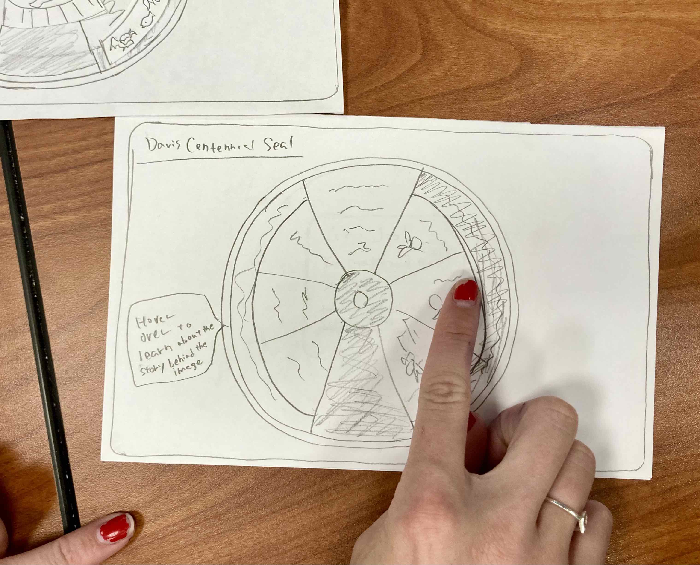

First round of user testing: My peer was able to navigate through the task easily as it was straightforward. However, she pointed out that the timing of the hover-over effect could interfere with the user's task when they drag and drop each piece of the sealing, which could be a usability issue. It was a valuable insight that I had not considered, and I decided to make changes based on her feedback.
I did not have the opportunity to conduct a second round of user testing. However, upon further consideration, I intend to change the timing and method of how users can access this information. I will explore different approaches to ensure that it enhances the user's experience. Additionally, I plan to document this feature on a separate paper to provide clarity and instructions to the users.
